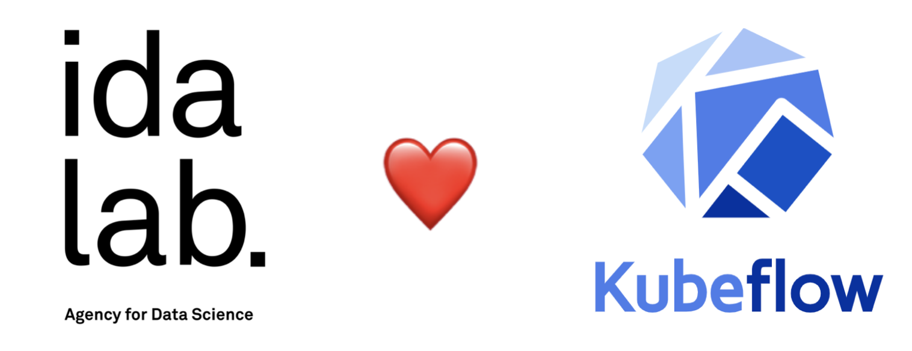
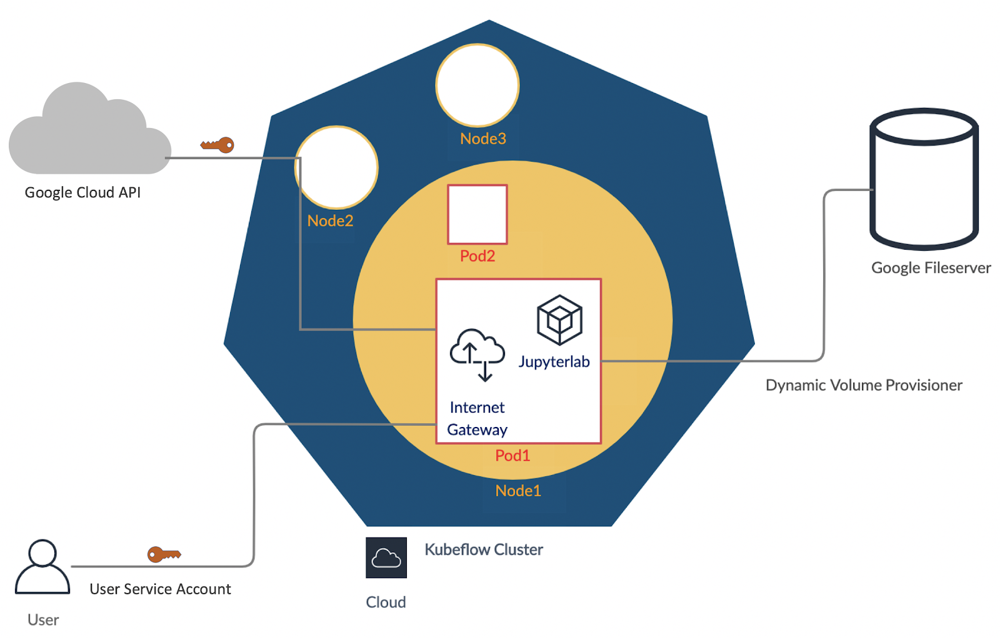
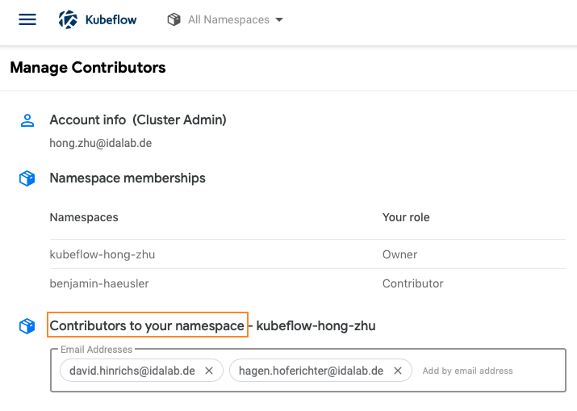

Backgrounds
As datasets continue to expand and models grow become complex, distributing machine learning workloads across multiple instances is becoming more attractive. Unfortunately, breaking up and distributing a workload can add both computational overhead, and a great deal more complexity to the system. Data scientists should be able to focus on ML problems, not DevOps.
Fortunately, distributed workloads are becoming easier to manage, thanks to Kubernetes .
Kubernetes is a mature, production ready platform that gives developers a simple API to deploy programs to a cluster of machines as if they were a single piece of hardware. Using Kubernetes, computational resources can be added or removed as desired, and the same cluster can be used to both train and serve ML models.
What is Kubeflow?
Kubeflow is a free and open-source software platform developed by Google and first released in 2018. It is dedicated to making deployments of machine learning workflows on Kubernetes simple, portable and scalable. Kubeflow provides a straightforward way to deploy best-of-breed open-source systems for ML to diverse cloud infrastructures (AWS, GCP, Azure etc.).
In short, you could understand Kubeflow as the machine learning toolkit for Kubernetes. Features that are supported by Kubeflow will be introduced in detail in the next Chapter.
This codelab will serve as an introduction to Kubeflow, an open-source project which aims to make running ML workloads on Kubernetes simple, portable and scalable. Kubeflow adds some resources to your cluster to assist with a variety of tasks, including training and serving models and running Jupyter Notebooks. It also extends the Kubernetes API by adding new Custom Resource Definitions (CRDs) to your cluster, so machine learning workloads can be treated as first-class citizens by Kubernetes.
Kubeflow at idalab
The picture below presents a rough structure of our Kubeflow deployment at Google Cloud.
Each Kubeflow consumer here at idalab will be assigned a User Service Account to access to Kubeflow services hosted on the compute engine.
Now taking notebook server for instance, unlike other systems you may have used in the past, Kubernetes doesn't run the containerized Jupyterlab directly. Instead the Jupyterlab container will be wrapped together with a istio-proxy container into a higher-level structure called pod. Any containers in the same pod will share the same resources and local network. Containers can easily communicate with other containers in the same pod as though they were on the same machine while maintaining a degree of isolation from others.
Pods are deployed on Nodes. A node is the smallest unit of computing hardware in Kubernetes. It is a representation of a single machine in the cluster. In our case, they are the virtual machines hosted on the cloud provider Google Cloud Platform.
Because programs running on our cluster aren't guaranteed to run on a specific node, data can't be saved to any arbitrary place in the file system. If a program tries to save data to a file for later, but is then relocated onto a new node, the file will no longer be where the program expects it to be. For this reason, the traditional local storage associated to each node is treated as a temporary cache to hold programs, but any data saved locally can not be expected to persist. Therefore, to store data permanently, Kubernetes uses Persistent Volumes. In our project, we use Google Cloud Filestore to be attached to the cluster as persistent volumes. This can be thought of as plugging an external hard drive in to the cluster. Persistent Volumes provide a file system that can be mounted to the cluster, without being associated with any particular node.
https://medium.com/google-cloud/kubernetes-101-pods-nodes-containers-and-clusters-c1509e409e16
Magic Link: kube.idalab.de
Managing Namespace Contributors
Kubeflow allows you to share your profiles with other users in the system. An owner of a profile can share access to their profile using the Manage Contributors tab available through the dashboard.
Below is an example of the manage contributors tab view, to add and remove contributors is easily possible by simply adding/removing the user identifier (idalab user email address) in the Contributors to your namespace field. Once added, the Manage Contributors tab will show the profiles with their corresponding contributors listed.


The contributors will have access to all the Kubernetes resources in the namespace and will be able to create notebook servers as well as access existing notebooks. The contributor's access can be removed by the owner of a profile by visiting the manage contributors tab and removing the user email/id from the list of contributors.
Your Feedback is very important to us to make it better: https://forms.gle/ARdrjNxesNnzhcgH8